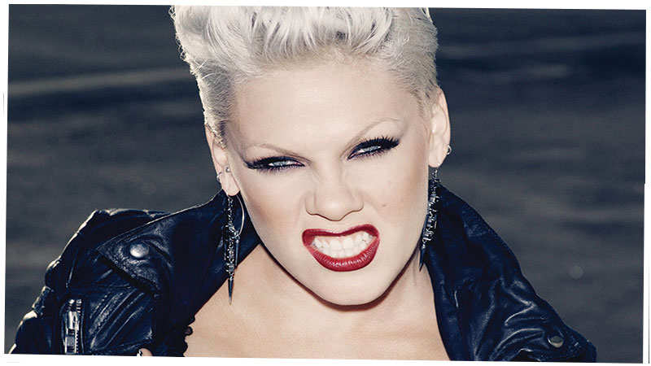

Who We Are
Atomic Records is a recording label specializing in a variety of music including Christian, rock, country and blues. Atomic Records was formed in 1960 by Frank Sinatra in order to allow more artistic freedom for his own recordings. Hence, he garnered the nickname "The Chairman of the Board." As CEO of Atomic Records, Sinatra recruited a host of his cronies for the fledgling label, such as fellow Rat Pack members Dean Martin and Sammy Davis, Jr. The original roster from 1961 to '63 included Bing Crosby, Jo Stafford, Rosemary Clooney, Esquivel and stand-up comedian Redd Foxx. From its creation the label has boomed and has now been in business for over 40 years and have sponsored many major artists in America past and present.
New Music Videos
“Break”
Three Days Grace
New Jazz Artists
and Music Videos
Added
© Atomic Records 2013 530 Seventh Avenue, Floor 15 New York, NY 10018 PHONE: 212.233.1121 FAX:212.403.6221